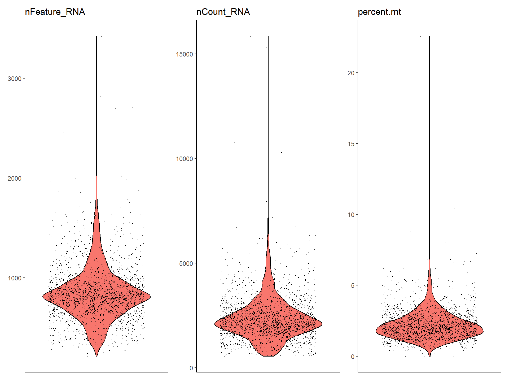
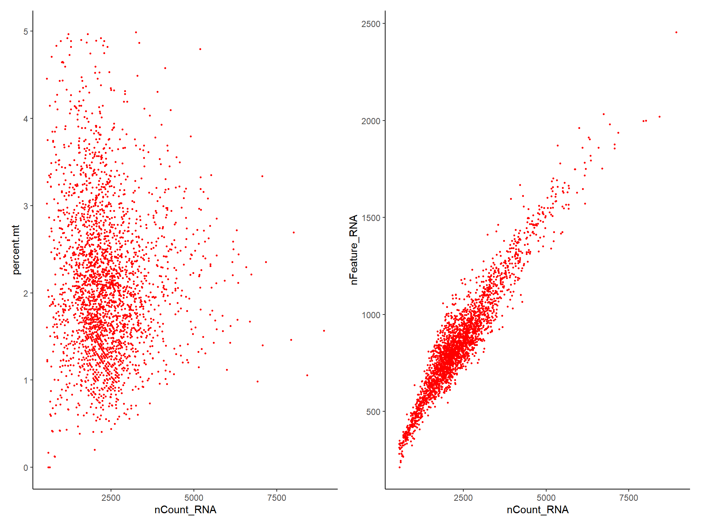
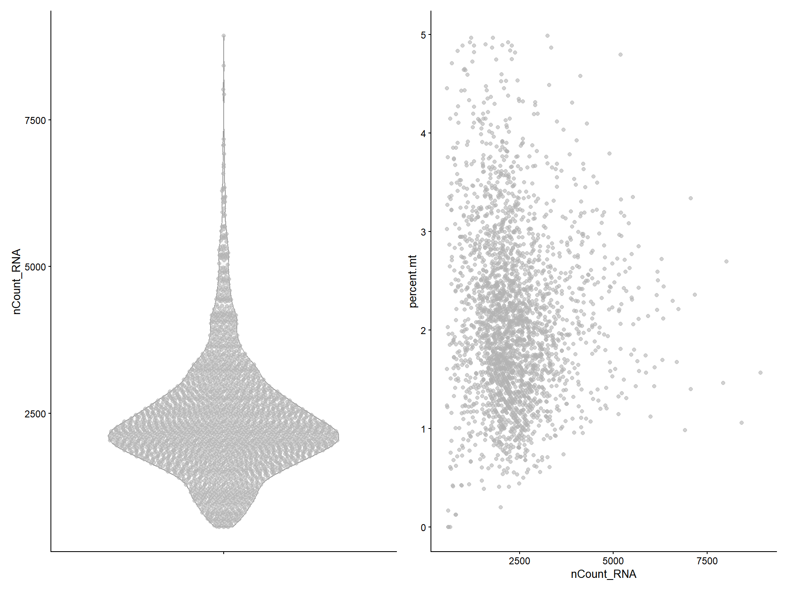
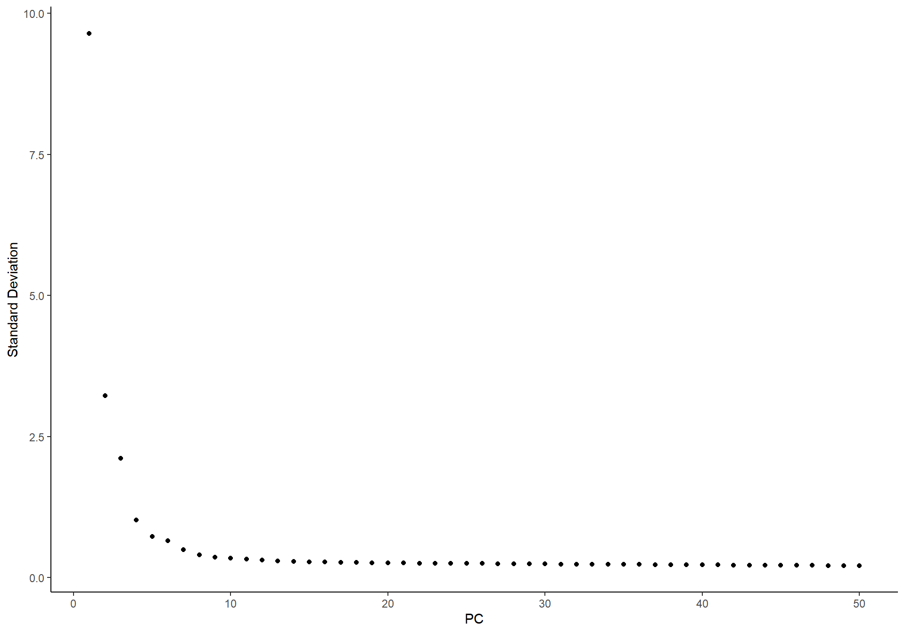
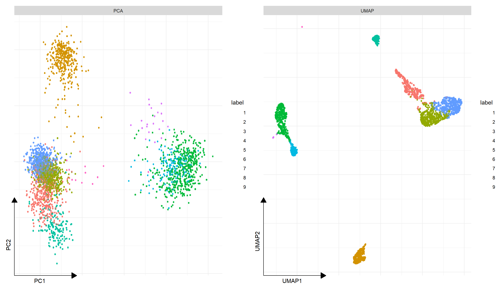

1 Seurat-like functions
1.2 QC
# colData(sce)$percent.mt <- PercentageFeatureSet(sce, "^MT-")
sce[["percent.mt"]] <- PercentageFeatureSet(sce, "^MT-")
VlnPlot(sce, features = c("nFeature_RNA", "nCount_RNA", "percent.mt"))
## ************************************************** >=0 | 32738 (100%)
## ************************* >=1 | 16634 (51%)
## ********************** >=2 | 14702 (45%)
## ********************* >=3 | 13714 (42%)
## ******************** >=4 | 13034 (40%)
## ******************* >=5 | 12572 (38%)
## ******************* >=6 | 12198 (37%)
## ****************** >=7 | 11876 (36%)
## ****************** >=8 | 11627 (36%)
## ***************** >=9 | 11379 (35%)
## ***************** >=10 | 11139 (34%)sce <- subset_feature(sce, mincell = 3, peek=FALSE)
sce <- subset(sce, subset = nFeature_RNA > 200 & nFeature_RNA < 2500 & percent.mt < 5)
sce## class: SingleCellExperiment
## dim: 13714 2638
## metadata(1): Samples
## assays(1): counts
## rownames(13714): AL627309.1 AP006222.2 ...
## PNRC2_ENSG00000215700 SRSF10_ENSG00000215699
## rowData names(2): ID Symbol
## colnames: NULL
## colData names(5): Sample Barcode nFeature_RNA
## nCount_RNA percent.mt
## reducedDimNames(0):
## mainExpName: NULL
## altExpNames(0):plot1 <- FeatureScatter(sce, feature1 = "nCount_RNA", feature2 = "percent.mt")
plot2 <- FeatureScatter(sce, feature1 = "nCount_RNA", feature2 = "nFeature_RNA")
library(aplot)
plot_list(plot1, plot2)
Users can also use plotColData() to visualize the QC data.
# VlnPlot-like
p1 <- plotColData(sce, y = 'nCount_RNA')
# FeatureScatter-like
p2 <- plotColData(sce, x = "nCount_RNA", y = "percent.mt")
plot_list(p1, p2)
1.3 Variable features
sce <- NormalizeData(sce)
sce <- FindVariableFeatures(sce)
top10 <- head(VariableFeatures(sce), 10)
top10## [1] "PPBP" "LYZ" "S100A9" "IGLL5" "GNLY" "FTL"
## [7] "PF4" "FTH1" "GNG11" "S100A8"
1.4 Dimensional reduction
sce <- ScaleData(sce)
sce <- runPCA(sce, subset_row = VariableFeatures(sce), exprs_values = "scaled")
ElbowPlot(sce)
1.5 Clustering
set.seed(2024-10-01)
sce <- FindNeighbors(sce, dims = 1:10)
sce <- FindClusters(sce)
head(Idents(sce), 5)## AAACATACAACCAC-1 AAACATTGAGCTAC-1 AAACATTGATCAGC-1
## 1 2 3
## AAACCGTGCTTCCG-1 AAACCGTGTATGCG-1
## 4 5
## Levels: 1 2 3 4 5 6 7 8 91.6 UMAP
sce <- RunUMAP(sce, 1:10)
library(ggsc)
library(aplot)
p1 <- sc_dim(sce, reduction="PCA")
p2 <- sc_dim(sce, reduction="UMAP")
plot_list(gglist = list(PCA=p1, UMAP=p2))
1.7 Find Markers
# find all markers of cluster 2
cluster2.markers <- FindMarkers(sce, ident.1 = 2)
head(cluster2.markers, n = 5)## pval padj avg_log2FC pct.1 pct.2
## CD79A 5.305484e-102 7.275940e-98 68.33509 1 0.052
## CD74 1.995011e-87 1.367979e-83 -106.95385 1 0.787
## CD79B 2.013334e-85 9.203619e-82 54.24136 1 0.141
## MS4A1 1.920813e-84 6.585508e-81 46.48265 1 0.062
## HLA-DQA1 2.199464e-82 6.032690e-79 10.08589 1 0.098# find all markers distinguishing cluster 5 from clusters 0 and 3
cluster5.markers <- FindMarkers(sce, ident.1 = 5, ident.2 = c(0, 3))
head(cluster5.markers, n = 5)## pval padj avg_log2FC pct.1 pct.2
## GZMB 4.691392e-80 6.433775e-76 156.62778 1 0.040
## NKG7 3.980428e-78 2.729380e-74 100.09227 1 0.172
## GNLY 5.141676e-77 2.350431e-73 111.81262 1 0.120
## PRF1 3.439975e-72 1.179396e-68 65.89194 1 0.091
## CST7 2.280830e-69 6.255860e-66 54.83849 1 0.135# find markers for every cluster compared to all remaining cells,
# report only the positive ones
library(dplyr)
pbmc.markers <- FindAllMarkers(sce, only.pos = TRUE)
pbmc.markers %>%
group_by(cluster) %>%
dplyr::filter(avg_log2FC > 1) %>%
slice_head(n = 10) %>%
ungroup() -> top10
top10 ## # A tibble: 10 × 7
## pval padj avg_log2FC pct.1 pct.2 cluster gene
## <dbl> <dbl> <dbl> <dbl> <dbl> <chr> <chr>
## 1 3.55e-72 4.87e-68 92.8 1 0.003 9 PF4
## 2 2.78e-71 1.91e-67 27.9 1 0 9 GP9
## 3 1.65e-65 7.52e-62 11.8 1 0.003 9 ITGA2B
## 4 8.70e-65 2.98e-61 11.3 1 0 9 AP00118…
## 5 1.74e-59 3.97e-56 35.2 1 0.012 9 GNG11
## 6 1.74e-59 3.97e-56 64.6 1 0.012 9 SDPR
## 7 2.53e-58 4.96e-55 42.3 1 0 9 TMEM40
## 8 8.70e-57 1.49e-53 48.4 1 0.009 9 TUBB1
## 9 3.80e-56 5.79e-53 14.5 1 0.015 9 SPARC
## 10 1.10e-52 1.51e-49 48.1 1 0.003 9 PTCRA